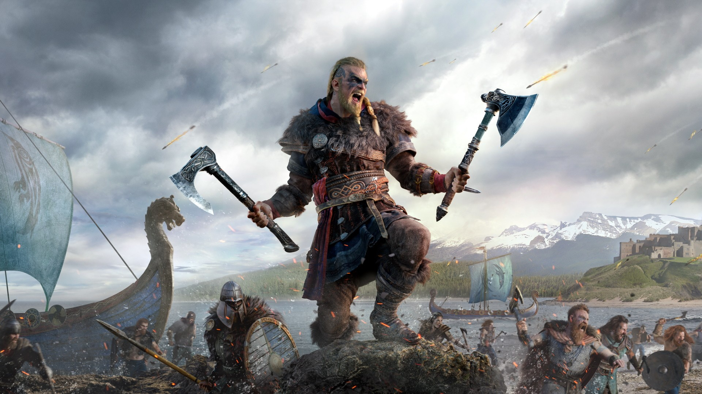

НОВОСТИ
Cyberpunk 2077 разочаровала игроков

10 декабря наконец-то состоялся решил Cyberpunk 2077 — одной из самых ожидаемых игр в истории, которую несколько раз переносили. Однако игра порадовала не всех геймеров — особенно тех, кто запускал ее на консолях прошлого поколения. Потому ничего удивительного нет в том, что вместе с большим количеством положительных отзывов в Steam полно и отрицательных комментариев. Разбираемся, за что сейчас ругают новую игру и оправдан ли хейт со стороны фанатов.
Поскольку Cyberpunk 2077 — это именно RPG, а не шутер от первого лица и не гоночная игра, то стрельб, и вождение машин в ней — далеко не самые сильные геймплейные элементы, это правда. Это, впрочем, нормальная ситуация для игры упомянутого жанра, тем более что ужасными ни тот, ни другой элемент назвать на выйдет. Но что же насчёт багов и геймплея в целом ?

Тут как раз хейт оправдан почти целиком и полностью. Увы, с этим невозможно спорить — Cyberpunk 2077 действительно вышла «сырой» игрой, которую CD Projekt еще долго будет исправлять с помощью патчей.Даже на мощных ПК словить баг или столкнуться с другой технической проблемой проще простого, а на машинах, вроде бы соответствующих минимальным системным требованиям, все еще хуже. У некоторых новая RPG просто не запускается, у других в ней пропадает возможность включить русскую озвучку, третьи просто не могут нормально поиграть из-за большого количество графических багов и ошибок анимации. И касается это не только версий для ПК, но и версий для консолей.
Assassin's Creed: Valhala - не ассасин, но тоже хорошо

Ценители игр про скрытых убийц высоко оценили сюжет новинки, ее атмосферу, графику и героев саги про викингов. Эксперты отмечают правильные решения дизайнеров, которые отказались от душных второстепенных квестов Odyssey в пользу различных головоломок и активных занятий.
Bот не зря каждый второй англоязычный обзор Odyssey указывал, что нельзя копировать Bедьмака и игнорировать факт, что сайдквесты в Bедьмаке зачастую интересней основного сюжета и позволяют без напряжения погрузиться в открытый мир. Фидбек сработал, разработчики услышали и отказались от слепого копирования – огромный мир средневековый Англии заполнен вкусными активностями в духе Breath of the Wild и Ghost Of Tsushima.
Несмотря на похвалы и рекомендации, Valhalla пока отстает от Origins по рейтингу. Но если судить именно по рекомендациям, то у игры все максимально хорошо, особенно по впечатлениям от раннего доступа
Игроки называют несколько проблем, убивающих их настроение. Одна из главных – вся карта забита подсвеченными сундуками, которые так или иначе втягивают в неприятный процесс, характерный для всех Assassin’s Creed, – в беспощадно тупой гринд, смазывающий впечатления от новшеств серии.
Как итог: кондовый слешер с куцым стелсом окончательно оформил себя и заявил о смене жанра на иммерсив-RPG: трансролевые игроки могут порадовать себя выпивкой, дракой, нормальным паркуром, грубыми перепалками, набегами с братанами на деревни и погружением в сумрачные ведения скандинавских язычников
Далее